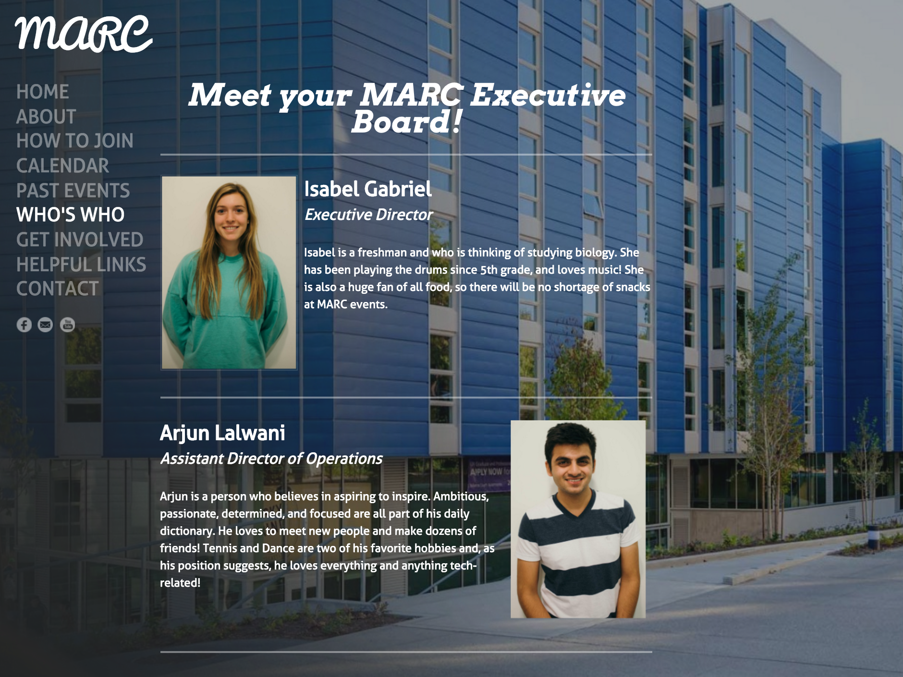
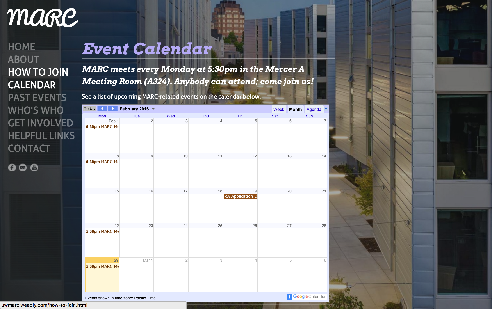
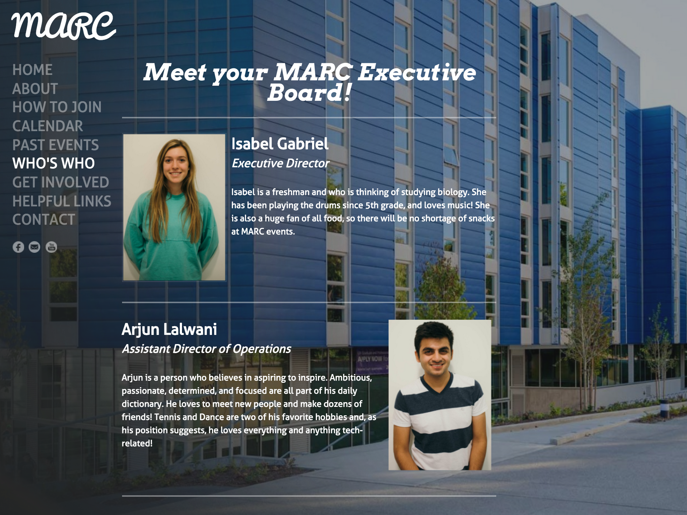
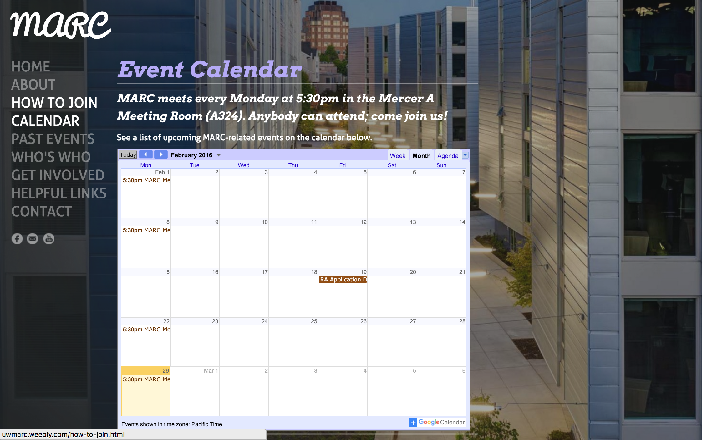
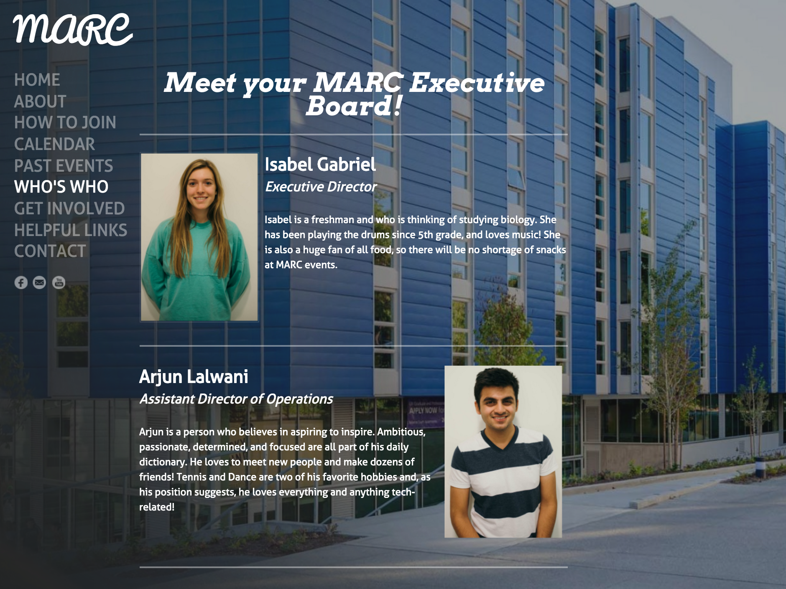
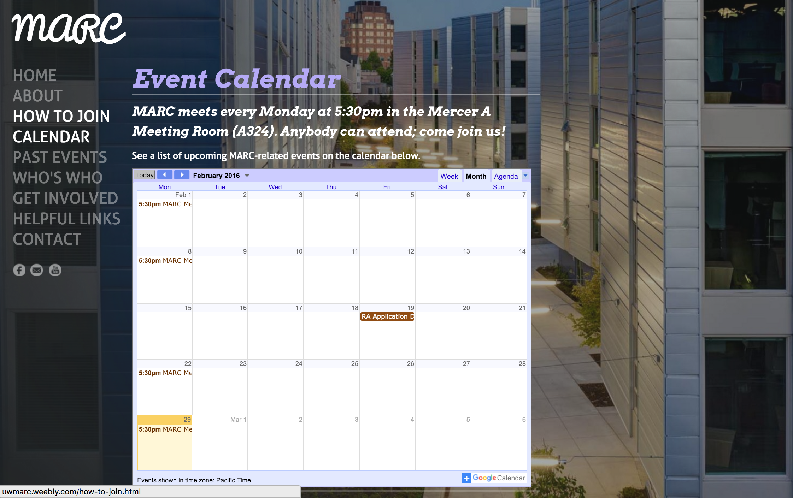

An informative Weebly site that educate prospective members about hall council during recruitment as well as providing event dates and contents afterwards.
In the beginning of the school year, when we recruit for hall council members, the Resident Director and the Assistant Resident Director would host information sessions for Mercer residents who are interested. However, it is simply too much information for people to retain afterwards, since hall council consists of at least 10 different positions and 3 hierarchies. In order to access the application, people also have to type in a long URL to do so. Our goal was to have all the information in one place.


The MARC website was born! On the front page, the "Find Out More" button would introduce the residents about MARC's responsibilities and goals. Right underneath, there is a comedy recruitment video that I used at the beginning of the 2015-2016 school year.
Before the website was created, the RD and ARD would email the forms out to everyone who had attended the information sessions. Now, the "How To Join" section takes care of that It would have the forms that applicants have to fill out and turn in when they apply as well as the link to the actual application. Right now, they are not displayed since recruitment is done in the Fall.
The "How To Get Involved" section is a question tree that helps people identify what position fit them the best.
Other parts of the website display the Executive Board, who leads the general direction of MARC, event dates and highlight videos, as well as a simply contact form at the end.
Currently, I mentor MARC's Multimedia Specialist Katie with maintaining and updating the website.
2013-2014 1st year of MARC, no website: 12-20 people per meeting.
2014-2015 2nd year of MARC, with website: 25-30 people per meeting.
2015-2016 3rd year of MARC, with website: 35-40 people per meeting, largest amongst 12 residence halls.